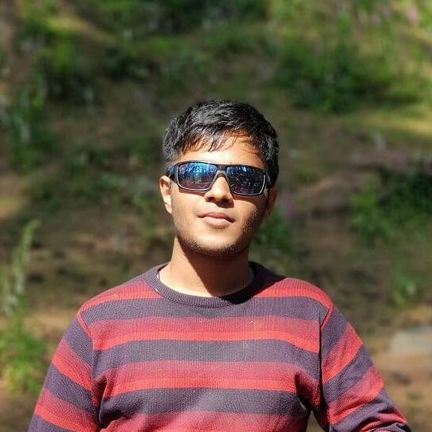

After my second year summer, which I wasted, internship season began. I had no good projects to show on my resume. My resume wasn't impressive at all. Companies came, and I didn't even sit for the first few companies (I mean the big names like TI, TSC and Honeywell etc.). I was sure, and I was not going for any non-core company. I liked electrical. So, I had to sit for quite less number of JAFs. I tried at Qualcomm, gave my first interview, and I lost it there. It was my first interview and it was such a bad experience. Then I gave up Analog Devices. The written test was hard, the interview was okayish. I was quite sure I shall grab the internship, but when the result came after 2-3 weeks, I lost and was dejected. Then a few more companies, some couldn't even clear the test and some not the interview. At that time, almost everyone in my batch had grabbed an internship. Even those whom I thought I was in a common boat with.

Then winter again wasted it. Then after a few more tries, finally landed up in Sedemac Mechatronics in Pune. I had signed for two JAFs, and the interviews were telephonic. They asked very basic technical questions and a few more tricky questions, basically not testing my knowledge but how I thought. I aced both the interviews. I got a call later from HR telling me I had been selected in both the JAFs. I was on cloud 9. I chose my favourite. I even researched about Pune and procrastinated about my life there.
Then Corona happened. Later March I finished my EDL. In April beginning, I got a call from the company telling me if I could start my internship right then in WFH mode. I accepted. I was a bit scared though. I got a call, and they shared the material with me. It was new, but I liked it. It was related to Electrical Machines. I wanted to do something that no one else does. That's why I had accepted this internship in the first place.
Initially, it was a bit tough, then one day my simulation ran (the feeling when your code finally runs clean), my mentor was pleased, I felt a fire within me. I had lost my interest in studies after doing bad in my second and third year, but I found it again. I started taking much more interest in my intern, and I actually enjoyed it. Somedays, I would just play 0 AD on my Linux, other days I would work from morning till evening with breaks of course. It didn't matter to me if it was weekday or weekend (Lock-Down, so you know!). In the end of May, we had the final presentation. Upon my mentor's advice, I spent the last ten days just making a presentation and code clean up. My presentation went very well as I had rehearsed it well.
By mid of May, we had got to know Insti won't be happening in June at least, so I asked the company if I could extend my internship for June as well. They were happy with me, so they obliged. My internship in June was more of a literature survey. Sometimes it felt like the work of an MBA, reading and interpreting conventions. My mentor's support was invaluable. We see so many memes and hear things like corporate jobs make people slaves. All those stereotypes broke in my mind. My mentor was very impressed with my work, even though I didn't feel I had done a great thing :) . Then we got to know insti was not happening in July either!
Then what! I asked them to extend for July as well. They accepted it. I got a new mentor this time. Again, as you can already guess I was on fire, I did my work with complete involvement and actively. Of course, my mentors were excellent. I was offered PPO, and I accepted it.
I was happy even though I had wasted a lot of time in insti. I made up a lot of it in this lockdown. Now, I feel much more confident, and now, I love electrical engineering. This semester I didn't see the grading stats at all. I just saw the course content while choosing the courses.